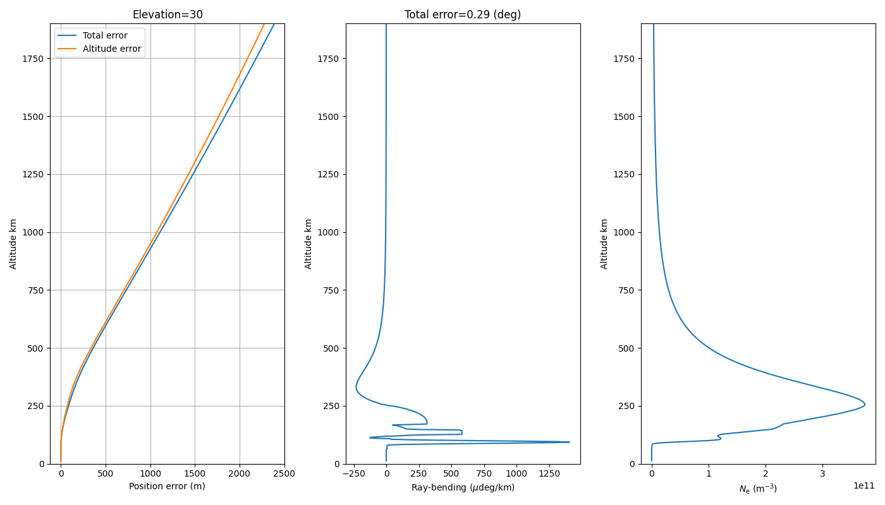

Note
Click here to download the full example code
Ray-trace radar signals with Pyglow¶

import numpy as np
import matplotlib.pyplot as plt
from astropy.time import Time
from mpl_toolkits.mplot3d import Axes3D
import sorts
results = sorts.errors.ray_trace(
time = Time('2004-6-21 12:00'),
lat = 69.34023844,
lon = 20.313166,
frequency=233e6,
elevation=30.0,
azimuth=180.0,
)
fig=plt.figure(figsize=(14,8))
plt.clf()
plt.subplot(131)
plt.title("Elevation=%1.0f"%(30.0))
plt.plot(np.sqrt(
(
results['p0x']-results['px'])**2.0
+ (results['p0y']-results['py'])**2.0
+ (results['p0z']-results['pz'])**2.0
),results['altitudes'],label="Total error")
plt.plot(results['altitude_errors'],results['altitudes'],label="Altitude error")
plt.ylim([0,1900])
plt.grid()
plt.legend()
plt.xlabel("Position error (m)")
plt.ylabel("Altitude km")
plt.subplot(132)
plt.plot(results['ray_bending']*1e6,results['altitudes'])
plt.xlabel("Ray-bending ($\mu$deg/km)")
plt.ylabel("Altitude km")
plt.title("Total error=%1.2g (deg)"%(180.0*results['total_angle_error']/np.pi))
plt.ylim([0,1900])
plt.subplot(133)
plt.plot(results['electron_density'],results['altitudes'])
plt.xlabel("$N_{\mathrm{e}}$ ($\mathrm{m}^{-3}$)")
plt.ylabel("Altitude km")
plt.ylim([0,1900])
plt.tight_layout()
plt.show()
plt.show()
Total running time of the script: ( 0 minutes 5.046 seconds)